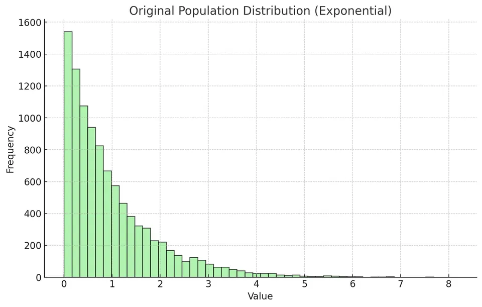
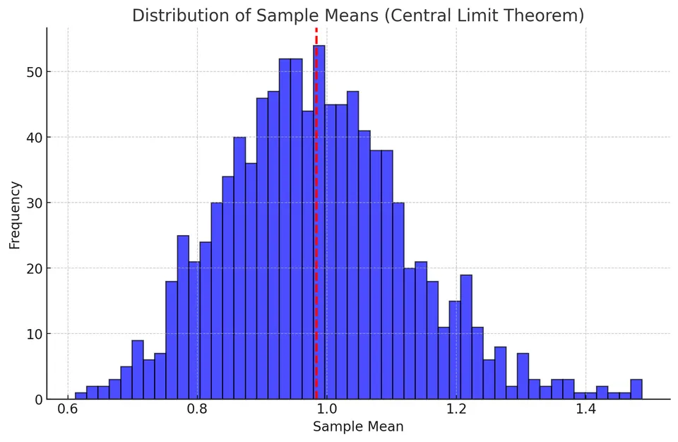

The Central Limit Theorem (CLT) is a fundamental result in statistics. It explains why the distribution of sample means often approaches a normal distribution as the sample size increases, even when the population itself is not normally distributed.
Suppose a population has mean $\mu$ and standard deviation $\sigma$. If we repeatedly take sufficiently large random samples of size $n$, then the distribution of the sample means is approximately normal under the usual CLT assumptions.
The sampling distribution of the mean has:
I. Mean approximately equal to the population mean:
$$ E[\bar{X}] = \mu $$
II. Standard deviation, called the standard error:
$$ SE(\bar{X}) = \frac{\sigma}{\sqrt{n}} $$
As $n$ increases, the standard error decreases, so sample means become more tightly concentrated around $\mu$.
Let $X_1, X_2, \ldots, X_n$ be independent and identically distributed random variables, each with mean $\mu$ and variance $\sigma^2$.
As $n$ tends to infinity, the standardized sum
$$ \frac{X_1 + X_2 + \cdots + X_n - n\mu}{\sigma\sqrt{n}} $$
converges in distribution to a standard normal distribution. Equivalently,
$$ P\left( \frac{X_1 + X_2 + \cdots + X_n - n\mu} {\sigma\sqrt{n}} \leq a \right) \to \frac{1}{\sqrt{2\pi}} \int_{-\infty}^{a} e^{-x^2/2}dx $$
Important points:
The CLT allows probabilities involving large samples to be approximated with the normal distribution. This is central to statistical inference.
For example, suppose an online game has a 20% probability of awarding a small prize on each independent attempt. The number of wins follows a binomial distribution. When the number of attempts is large, that binomial distribution can often be approximated by a normal distribution, which simplifies probability calculations.
The CLT is useful because:
The theorem depends on several conditions:
A histogram of sample means tends to become bell-shaped as the number and size of the samples increase. This is the normal sampling distribution predicted by the CLT.
In this example:
The plot below shows the original exponential population, which is strongly right-skewed.

For each of the 1, 000 samples, the sample mean is calculated using
$$ \bar{x} = \frac{1}{n}\sum_{i=1}^{n}x_i $$
where:
The second plot shows the distribution of those sample means. The distribution is approximately bell-shaped even though the original population is not normal.

Results from the simulation:
The mean of the sample means is close to the population mean, as predicted by the CLT. The observed spread is also consistent with the standard-error formula
$$ SE(\bar{X}) = \frac{\sigma}{\sqrt{n}} $$
A sample statistic can be standardized with a z-score:
$$ z = \frac{\text{statistic} - \text{expected value}} {\text{standard error of the statistic}} $$
For a sample mean, this becomes
$$ z = \frac{\bar{x} - \mu}{SE(\bar{X})} = \frac{\bar{x} - \mu}{\sigma/\sqrt{n}} $$
The z-score tells us how many standard errors the observed sample mean lies above or below the population mean.
Suppose incomes have the following population parameters:
The standard error of the sample mean is
$$ SE(\bar{X}) = \frac{\sigma}{\sqrt{n}} $$
For $n = 100$,
$$ SE(\bar{X}) = \frac{38{,}000}{\sqrt{100}} = \frac{38{,}000}{10} = 3{,}800 $$
Suppose the observed sample mean is $\bar{x} = 70{,}000$. Then
$$ z = \frac{70{,}000 - 67{,}000}{3{,}800} = \frac{3{,}000}{3{,}800} \approx 0.79 $$
The sample mean is approximately $0.79$ standard errors above the population mean.
Suppose the heights of a plant species are normally distributed with:
The standard error of the sample mean is
$$ SE(\bar{X}) = \frac{\sigma}{\sqrt{n}} $$
The z-score for a possible sample mean $x$ is
$$ z = \frac{x-\mu}{SE(\bar{X})} $$
We want to calculate
$$ P(14 \leq \bar{X} \leq 16) $$
for several sample sizes.
For $n=16$,
$$ SE(\bar{X}) = \frac{3}{\sqrt{16}} = \frac{3}{4} = 0.75 $$
The z-score for $14$ cm is
$$ z_{14} = \frac{14-15}{0.75} = \frac{-1}{0.75} \approx -1.33 $$
The z-score for $16$ cm is
$$ z_{16} = \frac{16-15}{0.75} = \frac{1}{0.75} \approx 1.33 $$
Using the standard normal distribution,
$$ P(Z \leq -1.33) \approx 0.0918 $$
and
$$ P(Z \leq 1.33) \approx 0.9082 $$
Therefore,
$$ P(14 \leq \bar{X} \leq 16) = 0.9082 - 0.0918 = 0.8164 $$
The probability is approximately 81. 64%.
For $n=64$,
$$ SE(\bar{X}) = \frac{3}{\sqrt{64}} = \frac{3}{8} = 0.375 $$
The corresponding z-scores are
$$ z_{14} = \frac{14-15}{0.375} \approx -2.67 $$
and
$$ z_{16} = \frac{16-15}{0.375} \approx 2.67 $$
Using the standard normal distribution,
$$ P(Z \leq -2.67) \approx 0.0038 $$
and
$$ P(Z \leq 2.67) \approx 0.9962 $$
Therefore,
$$ P(14 \leq \bar{X} \leq 16) = 0.9962 - 0.0038 = 0.9924 $$
The probability is approximately 99. 24%.
For $n=144$,
$$ SE(\bar{X}) = \frac{3}{\sqrt{144}} = \frac{3}{12} = 0.25 $$
The corresponding z-scores are
$$ z_{14} = \frac{14-15}{0.25} = -4 $$
and
$$ z_{16} = \frac{16-15}{0.25} = 4 $$
Using the standard normal distribution,
$$ P(Z \leq -4) \approx 0.00003 $$
and
$$ P(Z \leq 4) \approx 0.99997 $$
Therefore,
$$ P(14 \leq \bar{X} \leq 16) = 0.99997 - 0.00003 = 0.99994 $$
The probability is approximately 99. 99%.
As the sample size increases, the standard error decreases. This makes the sample mean more concentrated around the population mean.
Suppose the distribution of plant heights is unknown.
The CLT still allows the sampling distribution of the mean to be approximated by a normal distribution when the sample size is sufficiently large and the observations satisfy the theorem's assumptions.
For $n=64$, the calculations above may still be used as an approximation. The estimated probability remains approximately 99. 24%, although the quality of the approximation depends on the actual shape of the population distribution.